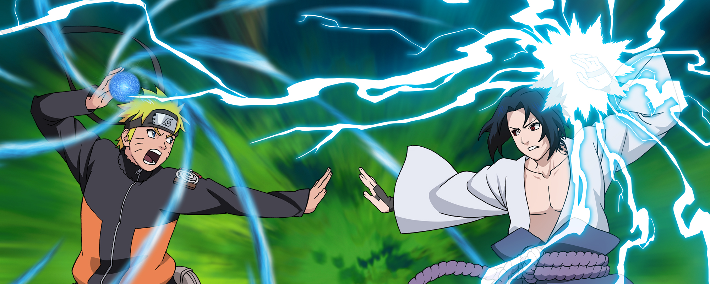

A Vila Oculta da Folha é uma das várias vilas ninja no mundo de Naruto. Essas vilas treinam ninjas para proteger e servir a suas comunidades. A paz entre as vilas é frágil e marcada por conflitos e rivalidades. O Nove-Caudas, ou Kurama, é um dos muitos Bijū, criaturas míticas com imenso poder. Seu ataque à vila trouxe caos e destruição, e o Quarto Hokage, Minato Namikaze, foi o herói que se sacrificou para selar o demônio dentro de seu próprio filho, Naruto, para evitar a completa aniquilação da vila.
Após o ataque, Naruto cresceu em meio à rejeição e ao medo dos outros habitantes da vila, que associavam o garoto ao Nove-Caudas. Sem saber da verdade sobre o sacrifício de seus pais e a razão pela qual era alvo de hostilidade, ele se tornou um órfão, vivendo uma vida solitária e muitas vezes amarga. Para lidar com a rejeição, Naruto busca desesperadamente reconhecimento. Ele entra para a Academia Ninja, onde se esforça para se destacar e mostrar seu valor. Seus esforços muitas vezes são impulsionados por sua necessidade de provar seu valor e ser aceito, tanto pelos seus colegas quanto pelos habitantes da vila.
Na Academia, Naruto conhece e faz amizade com Sasuke Uchiha, um dos últimos sobreviventes do clã Uchiha, conhecido por suas habilidades excepcionais, e Sakura Haruno, que inicialmente tem sentimentos mistos sobre Naruto, mas acaba se tornando uma amiga importante. Juntos, eles formam a Equipe 7 sob a liderança de Kakashi Hatake, um ninja habilidoso e enigmático. A jornada de Naruto começa com treinamentos e missões que vão testando suas habilidades e sua determinação. Ele enfrenta vários desafios e inimigos, desenvolvendo gradualmente suas habilidades ninja e conhecendo mais sobre o mundo e seu próprio passado. Ao longo da série, ele também começa a formar uma compreensão mais profunda sobre o que significa ser um ninja e o verdadeiro peso do legado de seus pais.
Os temas centrais de Naruto incluem a superação de adversidades, o valor da amizade e a busca por aceitação. Naruto, apesar de seu início difícil, demonstra uma incrível força de vontade e coragem, mostrando que mesmo alguém que começou com desvantagens pode alcançar grandes coisas com determinação e trabalho duro. Essa jornada de crescimento e descoberta é acompanhada de muitos momentos emocionantes e batalhas épicas, à medida que Naruto e seus amigos enfrentam desafios e inimigos poderosos, sempre mantendo seus sonhos e objetivos em mente.